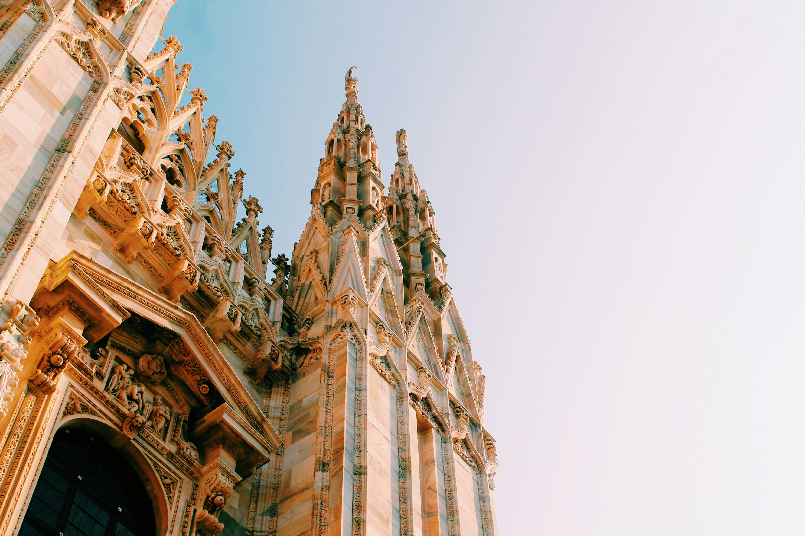
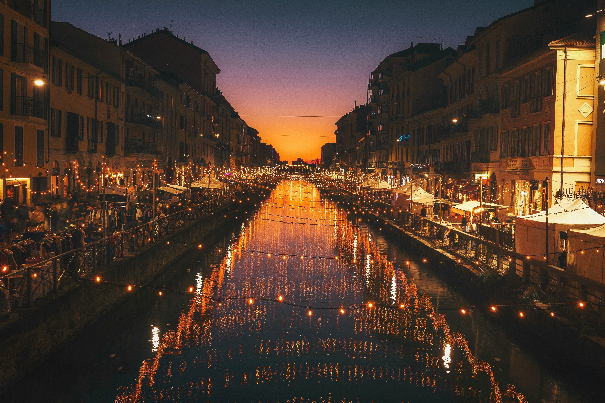

Hoş geldiniz! GeziOM, seyahat tutkunlarının vazgeçilmez rehberi ve keşif partneri olarak karşınızda. Size dünyanın dört bir yanındaki en gizli köşeleri, keşfedilmemiş güzellikleri ve unutulmaz deneyimleri sunuyoruz. Şehirlerin kalbinde, doğal güzelliklerin derinliklerinde ve kültürel hazinelerin arasında yapacağınız yolculuklarda GeziOM, size ilham verecek, yol gösterecek ve seyahatlerinizi daha anlamlı kılacak. Planlamadan keşfe, önerilerden pratik ipuçlarına kadar her şey burada, sizin için hazır. GeziOM ile her adımda yeni bir macera başlatın ve gezmenin keyfini çıkarın!
Milano’nun simgesi olan Milano Katedrali, şehrin merkezinde yer alır ve Gotik mimarisiyle dikkat çeker. 1386 yılında inşasına başlanan bu etkileyici yapı, bembeyaz mermerden inşa edilmiştir ve muazzam bir detay işçiliğine sahiptir. Katedralin tepe kısmına çıkarak şehrin panoramik manzarasını izleyebilirsiniz. Ayrıca, katedralin iç mekanını gezebilir ve muazzam vitray pencereleri, heykelleri ve tarihi eserleri görebilirsiniz.
Milano Katedrali’nin hemen yanında bulunan Galleria Vittorio Emanuele II, şehirdeki en ünlü alışveriş merkezlerinden biridir. 19. yüzyıldan kalma bu lüks alışveriş galerisi, etkileyici cam çatısı ve tarihi atmosferi ile dikkat çeker. Burada, ünlü markaların mağazalarını gezebilir, şık kafelerde oturabilir ve Milano’nun sosyetik atmosferini hissedebilirsiniz.
Santa Maria delle Grazie Kilisesi, Milano’nun en ünlü yapılarından biridir ve Leonardo da Vinci’nin ünlü eseri "Son Akşam Yemeği"ne ev sahipliği yapmaktadır. Bu fresk, Hristiyan sanatının başyapıtlarından biri olarak kabul edilir. Eseri görmek için önceden bilet rezervasyonu yaptırmak önemlidir çünkü ziyaretçi sayısı sınırlıdır ve biletler genellikle hızlıca tükenir.
Navigli, Milano’nun kanallarının etrafında yer alan ve şehrin canlı sosyal hayatının merkezi olan bir bölgedir. Akşam saatlerinde, Navigli bölgesindeki kafelerde ve restoranlarda oturup, kanal boyunca yürüyüş yapabilir ve şehir hayatının tadını çıkarabilirsiniz. Ayrıca, bölgedeki birçok vintage dükkânı ve sanat galerisi de gezilebilir.
Milano, dünyanın moda başkenti olarak bilinir ve şehrin ünlü moda caddeleri, alışveriş tutkunları için gerçek bir cennettir. Via Montenapoleone ve Via della Spiga gibi caddelerde, lüks markaların butikleri ve tasarımcı mağazalarını bulabilirsiniz. Bu bölgelerde alışveriş yaparak, Milano’nun stilini ve moda anlayışını yakından keşfedebilirsiniz.
Futbolseverler için San Siro Stadyumu, Milano’nun önemli bir cazibe merkezidir. AC Milan ve FC Internazionale’nin maçlarına ev sahipliği yapan bu stadyum, futbol tarihi açısından önemli bir yere sahiptir. Stadyumu gezebilir ve maç günlerinde heyecan verici bir futbol atmosferi yaşabilirsiniz.